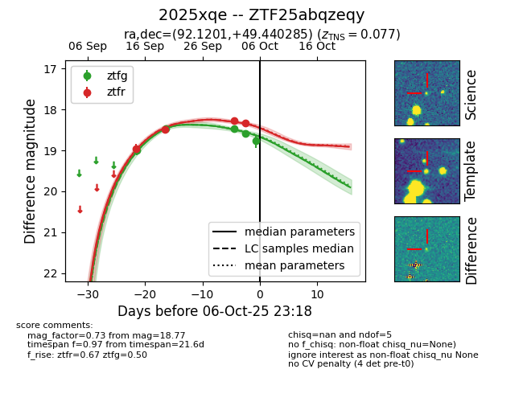
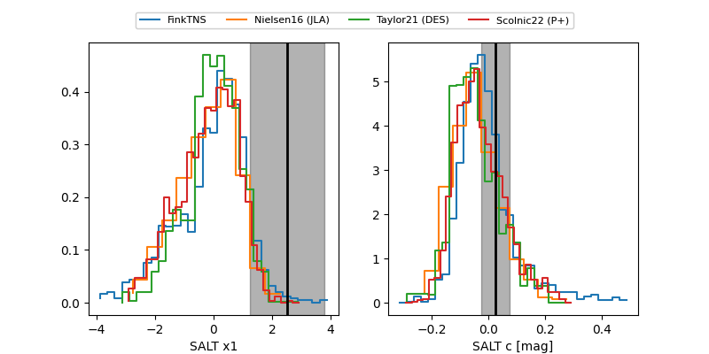

FINK: ZTF25abqzeqy
Lasair: ZTF25abqzeqy
ALeRCE: ZTF25abqzeqy
TNS: 2025xqe
YSE: 2025xqe
ZTF25abqzeqy (ztf,fink)
2025xqe (tns,yse)
equatorial (ra, dec) = (92.1201,+49.44029)
galactic (l, b) = (164.0680,+13.80312)


last ztfg=18.77, ztfr=18.33
5 ztfg, 4 ztfr detections